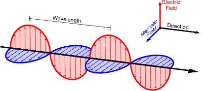
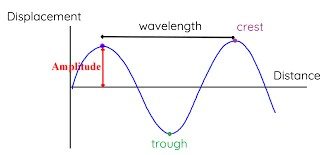
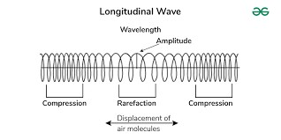
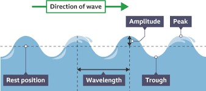
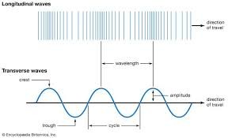

Introduction
Before getting into the technicalities and specifics of diffraction and interference, why don't we have a quick recap or learn about the basics?
What are waves?
Definition of a wave
A wave is a propagating dynamic disturbance (change from equilibrium) of one or more quantities. A wave transfers energy from one point to another without transferring the medium of the wave.
For example, sound is produced through the oscillations of air molecules (waves). The sound energy is transferred from the source to the listener’s ear, but the air molecules are not.
Wave Classifications
- Nature of Wave
The two most studied waves in classical physics as well as in H2 physics are mechanical waves and electromagnetic waves.
| Type of Wave | Explanation |
|---|---|
| Mechanical | - Defined as the oscillation of matter, therefore it transfers energy through a physical medium - The material must have inertia and elasticity, so the maximum displacement of the material is not far from the position of equilibrium - 3 types of mechanical waves: transverse waves, longitudinal waves and surface waves - Examples: sound waves, oscillating string |
| Electromagnetic (EM) | - Produced by a changing electric field that induces a changing magnetic field or vice versa - Electric field and magnetic field are perpendicular to each other - Can travel through a vacuum (no medium) at the speed of light, 3.00 $\times$ 108 m s-1 - Examples: x-ray, gamma ray, visible light  |
- Direction of Oscillation
Only transverse waves and longitudinal waves are covered in the A-level H2 Physics syllabus.
| Type of Wave | Explanation |
|---|---|
| Transverse | - Oscillates perpendicular to the direction of propagation of the wave - Has crests (peaks) and troughs (valleys) - Examples: electromagnetic (EM) waves, water waves  |
| Longitudinal | - Oscillates parallel to the direction of propagation of the wave - Has compressions (regions of high pressure) and rarefactions (regions of low pressure) - Examples: sound waves  |
| Surface | - Propagates along the boundary between two different materials (for example: water waves occur on the boundary between liquid and gas) - Consists of Love waves (transverse motion) or Rayleigh waves (transverse and longitudinal motion) - Examples: ocean waves, seismic waves*  |
*Water waves are a combination of transverse, longitudinal and surface waves, but is not a Rayleigh wave as water particles move in circular paths while Rayleigh waves move in elliptical paths
Comparison between transverse and longitudinal waves:

- Mode of Motion
| Type of Wave | Explanation |
|---|---|
| Progressive | - Transfers energy, does not store energy - Propagates through a medium - All points have the same maximum amplitude - Does not have nodes (amplitude = 0 at all times) or antinodes (amplitude = maximum displacement at all times) - Points exactly a wavelength apart are in phase |
| Standing | - Stores energy, does not transfer energy - Overall wave does not move - Each point has different amplitude - Has nodes and antinodes - Only nodes and antinodes are in phase |
Wave terms
| Term | Definition |
|---|---|
| Amplitude | Maximum displacement of a particle from its equilibrium position |
| Period | The time taken by a particle to make one complete oscillation or by a source to produce one complete cycle of wave |
| Frequency | Number of complete oscillations made by a particle or number of cycles of wave produced by a source in one second |
| Phase | Usually measured in degrees or radians, refers to the current position of a wave cycle relative to a reference point |
| Wavelength | Distance between two consecutive points in phase |
| Wave speed | Distance travelled per second by a wave profile |
Key Formulae Summary:
- Wave Speed
The speed $v$ of a wave is given by the product of its frequency $f$ and wavelength $\lambda$:
- Frequency
The frequency f of a wave is the number of oscillations per unit time:
where T is the period of the wave (the time it takes for one complete oscillation).
- Wavelength
Wavelength $\lambda$ is the distance between two consecutive points in phase on the wave (e.g., crest to crest, trough to trough):
- Standing Wave Condition
For standing waves on a string fixed at both ends, the wavelengths $\lambda_n$ are given by:
where:
- L is the length of the string,
- n is the mode number (integer).
The corresponding frequencies $f_n$ are: